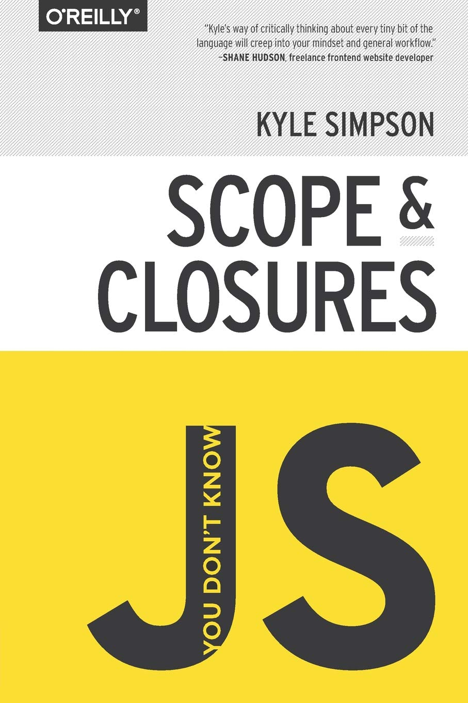
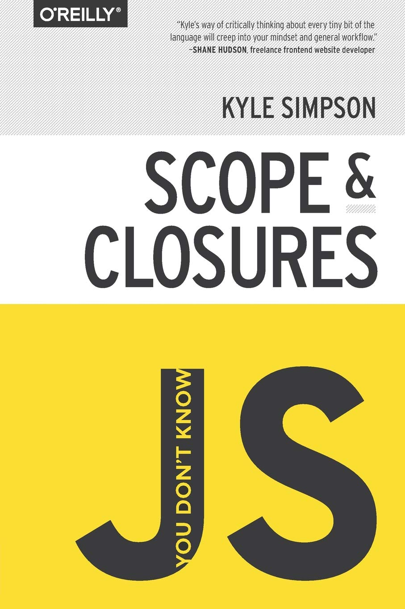

JS 책 추천
 



책 소개
모호하고 애매한 여덟 가지 자바스크립트 개념 길라잡이 : You Don’t Know JS 시리즈. 웹 초창기 시절부터 자바스크립트는 사람들이 대화하듯 웹 콘텐츠를 소비할 수 있게 해준 기반 기술이었다. 20년 가까이 흐른 지금은 엄청난 규모로 기술적 역량이 성장하였고, 세계에서 가장 널리 사용되는 소프트웨어 플랫폼이라 불리는 웹의 심장부를 형성하는 핵심 기술이 되었다. 자바스크립트는 처음 시작하고 실행하기가 가장 쉬운 언어지만, 다른 언어보다 완전히 숙달한 사람은 훨씬 적다. C/C++ 등으로 완전한 프로그램을 짜려면 언어 자체를 깊이 있게 알고 있어야 하지만, 자바스크립트는 언어 전체의 능력 중 일부를 수박 겉핥기 정도만 알고 사용해도 웬만큼 서비스가 가능한 프로그램을 만들어낼 수 있다. 바로 이 부분이 자바스크립트의 모순이자 아킬레스건이고, 이 책에서 다루는 주제이기도 하다. ‘You Don’t Know JS’ 시리즈는 자바스크립트의 모든 것, 그중 특히 착각하기 쉽고 이해하기 어려운 부분을 깊고 철저하게 파고든다. 『You Don’t Know JS』 시리즈 도서 You Don’t Know JS: 타입과 문법, 스코프와 클로저 강제변환의 유의 사항과 생성자로서의 네이티브 등 자바스크립트의 타입과 문법에 관한 모호한 개념을 저자 특유의 문체로 명쾌히 설명한다. 자바스크립트의 핵심인 스코프와 클로저에 대한 저자의 설명을 읽어보면 자바스크립트의 작동 원리가 머릿속에 그려질 것이다. You Don’t Know JS: this와 객체 프로토타입, 비동기와 성능 호출부에 따라 this가 어떻게 바인드되는지, 제너레이터로 비동기 흐름을 어떻게 표현할 수 있는지를 비롯한 객체 프로토타입의 체계 같은 자바스크립트 핵심 개념을 이 책에서 배울 수 있다.
대상 독자 초급에서 중/고급으로 레벨 업하고 싶은 자바스크립트 개발자 자바스크립트 개발 경험이 있지만 때때로 개념이 헷갈리는 개발자 원인 모를 자바스크립트 오류로 힘겨워하는 개발자 다 안다고 여겼던 자바스크립트, 정작 난 정확히 모르고 있었다. 자바스크립트는 웹의 태동과 괘를 같이 한 웹 프로그래밍 언어다. 웹의 심장부를 형성하는 대표 웹 프로그래밍 언어의 지위에 오른 자바스크립트는 사물인터넷(IoT), 증강현실(VR), 모바일 앱으로까지 영역을 확대하며 쓰임이 넓어지고 있다. 이처럼 자바스크립트 개발자가 웹 너머의 분야에서도 활약할 기회의 문이 열렸지만 자바스크립트에 완전히 숙달한 사람은 극히 드문 상황이다. C/C++ 등으로 완전한 프로그램을 짜려면 언어 자체를 깊이 있게 알고 있어야 하지만, 자바스크립트는 언어 전체의 능력 중 일부를 수박 겉핥기 정도만 알고 사용해도 웬만큼 서비스가 가능한 프로그램을 만들어낼 수 있기 때문이다. 바로 이것이 자바스크립트의 ‘모순’이자 ‘아킬레스건’이고, 이 책에서 다루는 주제다. 『You Don’t Know JS』 시리즈는 자바스크립트 중 특히 착각하기 쉽고 이해하기 어려운 부분을 깊고 철저하게 파고든다. 저자는 “그냥 이 정도면 됐지” 식으로 대충 이해하고 때우는 자세를 끊임없이 거론한다. 험한 길을 마주한 상황에서 쉬운 길로 돌아가라고 조언하지도 않는다. 자바스크립트에 대해 흔히 오해하고 있거나 잘못 이해하고 있는 여덟 가지 핵심 언어 요소를 완벽히 이해할 때까지 다양한 예제를 들어 깊고 철저하게 파헤쳐간다.